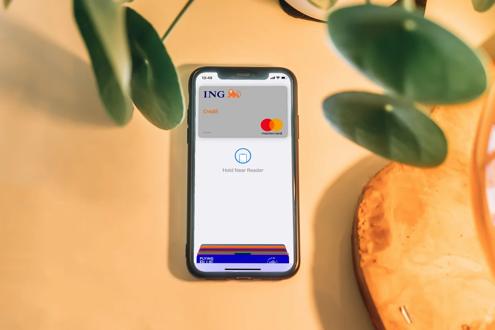
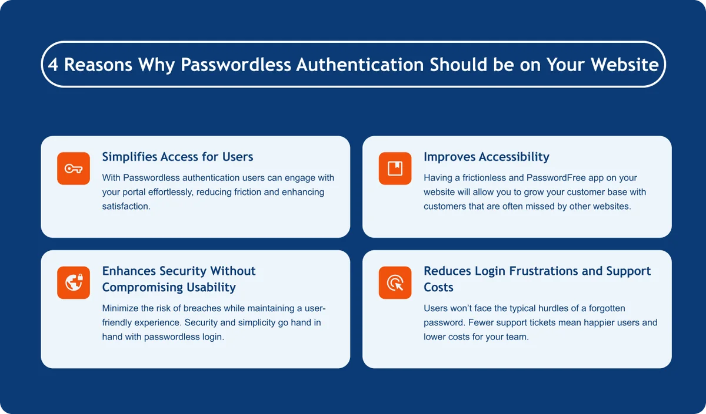

Four things you might have missed that can improve your digital sales.

In an era where users demand seamless and secure interactions, passwordless login is emerging as a game-changer for web portals. Traditional password-based systems are increasingly being replaced by more intuitive methods like biometrics, email-based magic links, and one-time passcodes. This shift isn’t just about security—it’s about delivering an unmatched user experience.
Here are three reasons why passwordless login is critical to achieving this goal.

1. Passwordless Login Simplifies Access for Users
The hassle of remembering multiple passwords is a significant pain point for users. Password fatigue, caused by managing dozens of accounts, often leads to poor practices like using weak or reused passwords. Passwordless login eliminates this burden entirely. Methods like biometric authentication (fingerprint or face recognition) or magic links allow users to access their accounts instantly without typing anything.
The result? Users can engage with your portal effortlessly, reducing friction and enhancing satisfaction.
2. Improves Accessibility
Disabled users that rely on dictation can struggle when a password is required. Elderly and those who are not online very often can be intimidated by cumbersome knowledge-based authentication methods such as passwords and OTP’s.
Having a frictionless and PasswordFree app on your website will allow you to grow your customer base with customers that are often missed by other websites.
3. Enhances Security Without Compromising Usability
Passwords are often the weakest link in security. They can be stolen, guessed, or hacked, especially when users rely on predictable combinations or use the same password across platforms. Passwordless systems, on the other hand, leverage advanced technologies like public key cryptography, biometrics, or time-sensitive tokens, which are inherently more secure.
By removing passwords from the equation, you minimize the risk of breaches while maintaining a user-friendly experience. Security and simplicity go hand in hand with passwordless login.
4. Reduces Login Frustrations and Support Costs
Forgotten passwords are a leading cause of user frustration and a significant drain on customer support resources. Password resets not only disrupt the user experience but also increase operational costs for your business. With passwordless login, this problem disappears.
For instance, users accessing your portal via a magic link sent to their email or a fingerprint scan on their device won’t face the typical hurdles of a forgotten password. Fewer support tickets mean happier users and lower costs for your team.
What makes PasswordFree® different?
Passwordless login isn’t just a trend—it’s a necessity for any web portal striving to deliver the best user experience. Many apps eliminate the password. Most will focus on simplicity at the expense of exposing a user to account takeover by bad actors.
PasswordFree Authentication® from Identité® provides a frictionless experience for users to register and login while protecting their accounts with our award-winning and patented Full Duplex Authentication®. The app installs in seconds with a couple of clicks and will transform your website into a simple and secure site for users to return to again and again.
Available for Shopify, BigCommerce and WordPress.
See the PasswordFree app for Shopify.
Read more about our PasswordFree plugin for BigCommerce.
Discover our PasswordFree app for WordPress.